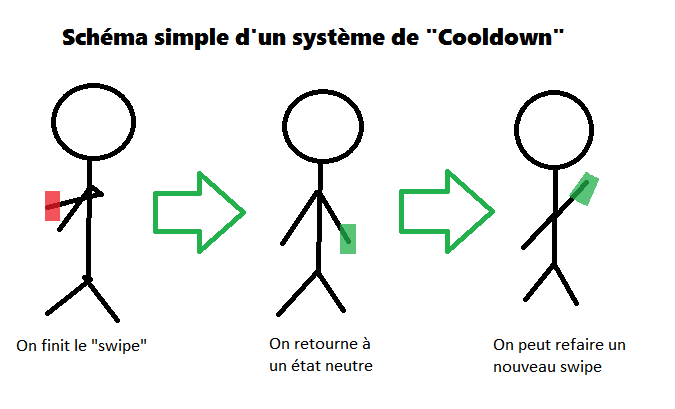

L’implémentation du clap est terminée. Après beaucoup de test et débogage, nous avons trouvé pourquoi le clap était reconnu dans notre scène de test, mais pas dans le jeu. En fait, nous n’avions pas pris en compte que les donnés de la Kinect étaient mises dans un objet de la scène et donc, en fonction de l’orientation de notre scène, les axes de la Kinect avec le jeu pouvaient changer. Donc, dans notre scène test l’axe des x était l’axe des x de la Kinect, mais dans la scène de jeu c’était l’axe des z. Nous avons changé nos variables de position globale pour des variables de position locale.
Le balayement ou « swipe » progresse. Pierre-Olivier a ajouté la possibilité de reconnaître un balayement horizontal vers la gauche ou la droite. Le seul hic avec l’implémentation dans son état actuel est qu’il n’y a aucune gestion du mouvement de retour. Par exemple, si on balaie notre main vers la gauche, le retour de bras vers la droite recréé un nouveau balayement. Nous devrons donc ajouté une période où les mouvements après le balayement sont refusés tant que le bras ne retourne pas à son état normal (allongé sur le côté du corps).
